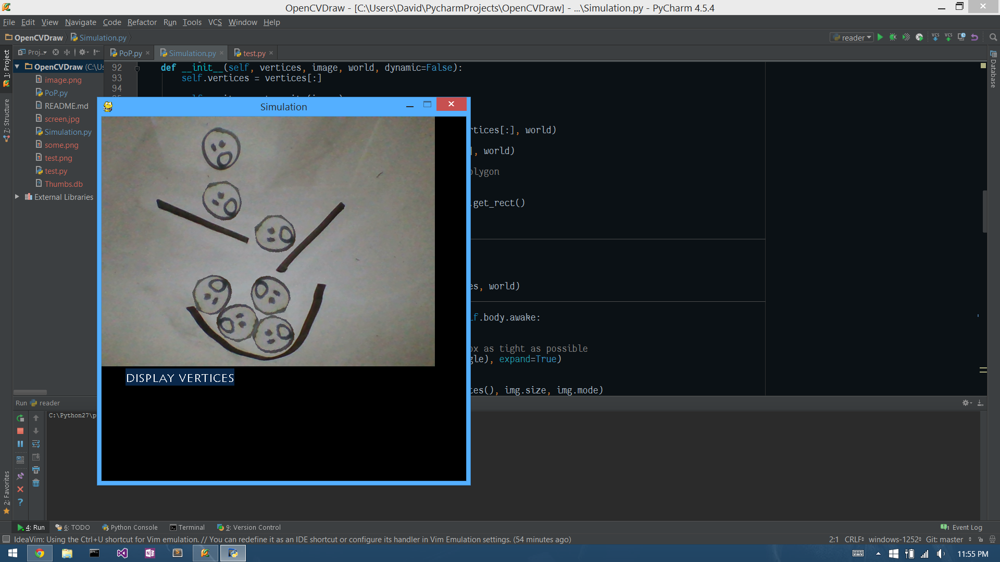
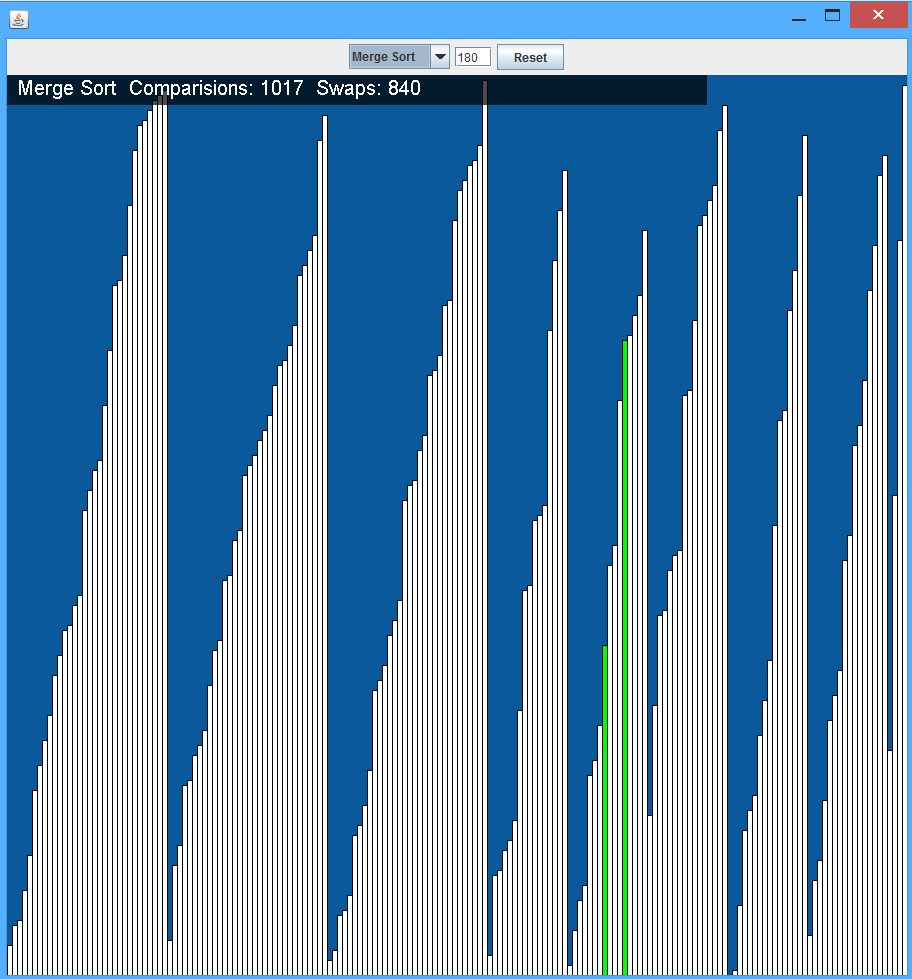
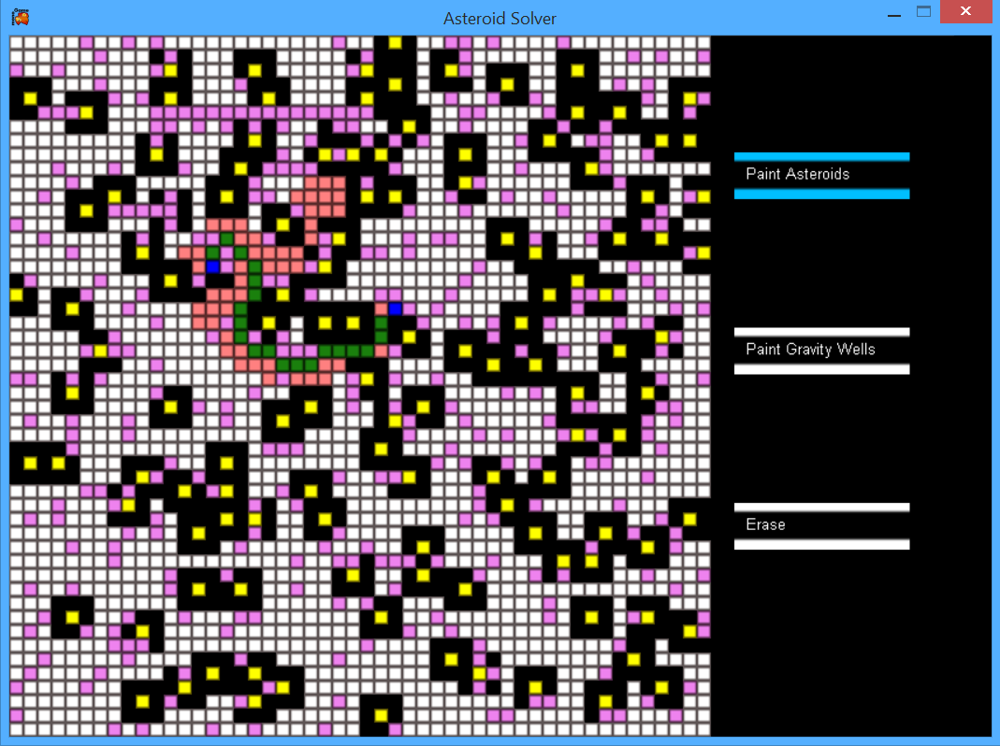
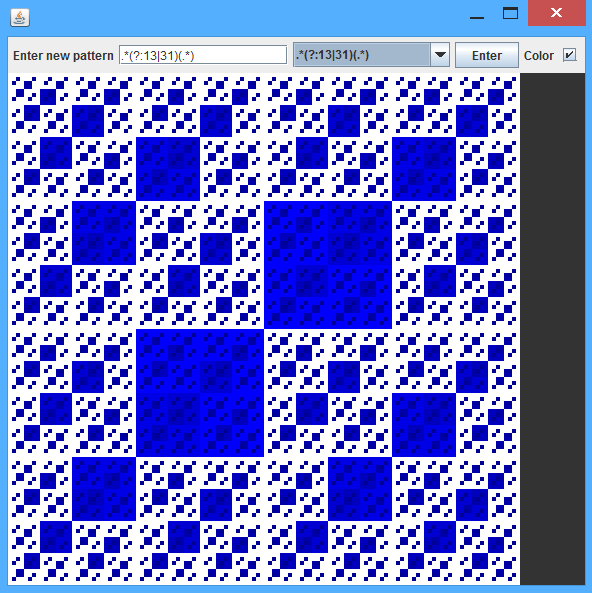
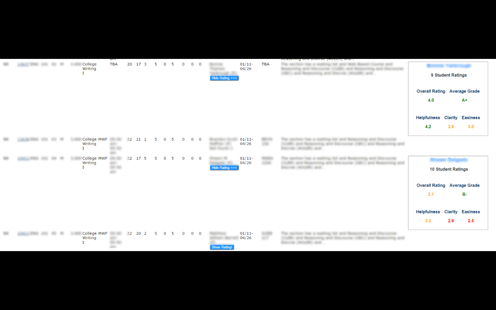

David Santana
About Me
A Junior at the University of North Carolina at Greensboro
Currently I am a lab tutor and a research assistant at UNCG. Also, after interviewing at many different companies, I am now a future Software Engineer intern at Google for the summer of 2017!
I absolutely love coding, I've been coding since my Junior year of High School and since then I've coded for fun, professionally, and for a remote job!
I am always looking for a new opportunity where I can exercise my skills. Between every opportunity I keep myself busy with my own personal side projects which you can see some examples of below!
Experience
Engineering Practicum Intern
Summer 2016
Implemented a type schema system to one of Google's largest indexing repository system
Research Assistant
Fall Semester 2016
Research in the IoT. Developing an ontology to create a "smart house" by having devices working together
Programmer
March - May, August - Present
Developed a program from scratch that analyzed various DNA files for infectious diseases.
Lab Tutor
Sprint Semester 2016 + Fall Semester 2016
Helped CS underclassmen with their assignments and their understanding of the material in class.
Skills
I have some experience in Go, and Dart as well, though projects made with these languages aren't as big as the rest so I am building my skills on these languages.
Project Highlights
These are some of my favorite projects! Each of them are all available on github and all demonstrate my interests. Go to my github for many more projects!
Physics on paper
Given a drawing, this program will use your web-cam to find the shapes you've drawn, then turn them into 2D objects! You can click on them and they will fall and collide with your other drawings!
Sorting visualizer
Visualize various sorting algorithms! You can change the input size and see visualization of different sorting algorithms.
Asteroid path finding
Randomly generates a maze filled with "asteroids" and "gravity wells" and will find a path between two points using the A* search algorithm! It will show an animation of process of finding the path. You can even edit the map and the program will re-find the shortest path between the two points.
Regex fractals
This will recursively split the screen into 4 quadrants, each quadrant holds it's respective quadrant and it's parent's number together as a string. After we have a split each quadrant small enough, you can feed the program a regex pattern and each cell that matches it will be colored.
Live Examples
Photo Quads
It takes an image and, using a quad tree, it will split the image into rectangles depending on which node in the tree is the farthest from it's estimated average color.
Image Palette
A twitter bot you should tweet at! it takes two images and using only the pixels in the first image, it will re-create the second
It's handle is @ImagePalette
RateMyGenie
A chrome extension that displays the professors ratings from ratemyprofessors.org and puts them in UNCG course listing page
Here's the chrome web store link!
Randomly generated art
To say thanks for visiting! It may be ugly but it's yours.
This "art" is created by simulating Conway's Game of life for a certain amount of cycles, each time a cell is to "die" or "be created" I increment a counter on that cell, which is used to refer to an index in an array of colors. At the end, I draw all the cells. Dead cells are filled with the color the cell is referring to, live cells are always black regardless of what color they refer to. This is the result of that!